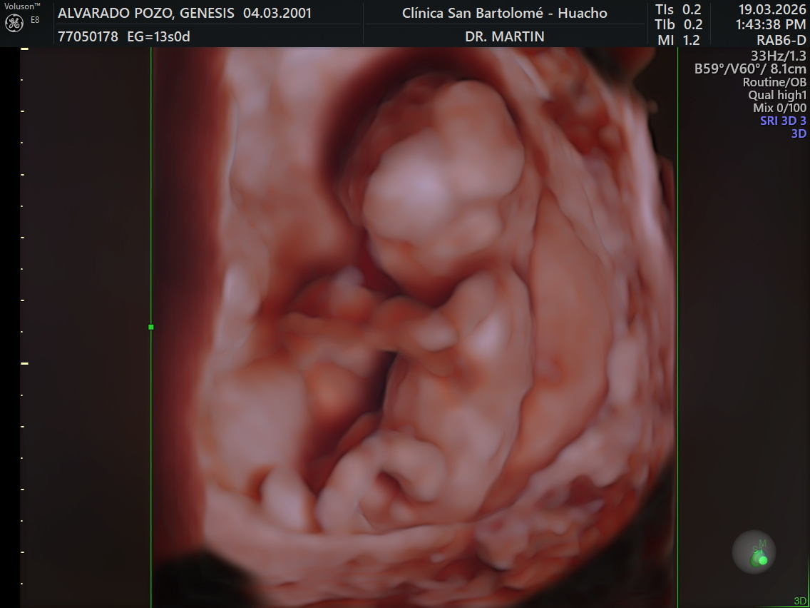

Los invitados llegan, se registran y reciben su tarjeta de votación (¿niño o niña?). Música suave de fondo, decoración rosada y celeste, mesa de bienvenida con snacks peruanos.
Todos se dividen en 2 equipos: Team Niño 💙 vs Team Niña 💗. Cada equipo responde preguntas sobre la mamá y el bebé. El equipo con más puntos gana un premio peruano.
Cada invitado revienta un globo que tiene adentro un papel con una pregunta divertida sobre el bebé: nombre, personalidad, a quién se parecerá. El más gracioso gana. ¡Muchas risas garantizadas! 🎈
Buffet con comida peruana: arroz con leche, mazamorra morada, causa limeña, pollo a la brasa y más. Mesa de postres temática con colores del evento. ¡El momento perfecto para la selfi!
Se reproducen canciones de cuna y canciones conocidas con letra modificada relacionada al bebé. Los invitados deben adivinar la canción original. ¡El más rápido en gritar gana un punto!
Cada invitado corta un trozo de lana del tamaño que cree que mide la barriga de mamá. Al final se comparan con la medida real. ¡El más cercano gana un detallito especial! 🏆
Cada invitado tiene una hoja con el abecedario completo. El reto: escribir un artículo o cosa de bebé para cada letra (A=Andador, B=Babero, C=Cuna…). Tiene 3 minutos. El que complete más letras correctas gana. ¡Sencillo pero pone a pensar a todos! 🧠✏️
¡El clásico frutifruti versión bebé! Se sortea una letra y hay que completar: nombre de niño · nombre de niña · fruta · animal · ciudad. El primero en gritar "¡Frutifruti!" puntúa. Se juegan 5 rondas rápidas. Ideal en mesas o grupos pequeños. 🏆
Cada invitado amarra un globo rosado o celeste en el tobillo. Al ritmo de la música, todos intentan reventar el globo ajeno sin que les revienten el suyo. ¡Último con globo entero gana! Caos, risas y mucha emoción garantizada. 💥
¡El triqui/gato humano y temático! Se forma un tablero gigante en el piso con 2 líneas verticales y 2 horizontales (cinta o cuerda), creando 9 casillas. Se forman 2 equipos: 💙 plato celeste = X (niño) vs 💗 plato rosado = O (niña). Por turnos, un integrante de cada equipo se para en una casilla. ¡El equipo que alinee 3 en fila gana la ronda! Se juegan varias rondas. 🏆
El animador hace preguntas del bebé. Crees que es varón → salta. Crees que es mujer → agáchate. El que se equivoque o llegue tarde queda fuera. ¡Perfecto para calentar el ánimo justo antes de la gran revelación! ⚡
Se trae la torta decorada en rosa y celeste. Papá y mamá la cortan juntos revelando el relleno de color (rosado o celeste). ¡El gran momento! Brindis con espumante y gaseosa para todos. 🥂
Los papás sueltan globos de colores al cielo o lanzan polvo de colores (confetti). ¡El color revelará si es niño o niña! Todos gritan, abrazan y celebran. Sesión de fotos grupal. 📸🎉
Palabras de los papás agradeciendo a todos. Música y baile libre para terminar la noche. 💃🕺
Al llegar, cada uno vota si cree que es niño o niña. Al final se revela quién acertó.
Toda la veladaCada invitado escribe su estimado del peso del bebé al nacer. El más cercano gana.
Papel y lapiceroCon plumones textiles, cada invitado decora un babero o mameluco para el bebé.
Super tiernoCada invitado escribe un mensaje o deseo para el bebé. Se guardan en un cajita especial.
EmotivoUna ruleta con preguntas divertidas para los papás: "¿A quién se parecerá más?" etc.
¡Risas garantizadas!Rincón de fotos con props rosados y celestes: coronitas, bigotes, letreros y más.
Recuerdo para todosHoja con el abecedario completo. Para cada letra hay que escribir un artículo de bebé. A=Andador, B=Babero, C=Cuna… ¡3 minutos para completar el mayor número de letras!
✏️ Papel y lapiceroVersión bebé del clásico frutifruti: cada ronda tiene una letra y hay que completar nombre de niño, nombre de niña, nombre de animal, fruta y ciudad. ¡El primero en gritar "¡Frutifruti!" gana el punto! Se juega en mesas o en grupos.
🏆 Muy competitivoCada invitado amarra un globo rosado o celeste en el tobillo. Al ritmo de la música, todos intentan reventar el globo del otro sin que les revienten el suyo. ¡El último con globo sano gana! Caos y risas totales.
💥 Mucho movimientoTablero gigante en el piso con 2 líneas verticales + 2 horizontales (9 casillas). Team 💙 celeste = X · Team 💗 rosado = O. Por turnos cada jugador se para en una casilla. ¡El que alinee 3 en fila gana la ronda!
⭕❌ Triqui humanoEl animador hace una pregunta sobre el bebé. Los que creen que es varón saltan, los que creen que es mujer se agachan. Se puede hacer al revés para confundir. El que se equivoque sale. ¡Perfecto para caldear el ambiente antes de la revelación!
⚡ Antes de revelar